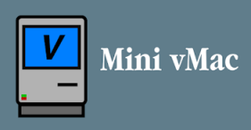

欢迎使用网页虚拟机(页面版本:V1.7.0)
*注意：您现在处于手机端或手机模拟器,平板电脑中,该页面可能使用不便
有Bug？欢迎反馈
当前可用模拟器列表
1.V86 虚拟机（V86发行版本:20260825）
Linux(Build root)终端
Snowdrop OS
xcom模拟器
Node OS模拟器
Microsoft Windows 1&2模拟器
kolibri OS模拟器
Floppy Bird模拟器
特殊内容
彩虹猫（非带有计时版本）
自定义虚拟机（现在该功能已修复，可以正常运行了~）
2.其它虚拟机

Boxed Wine(需下载38.2MB内容，可运行古早Win32/Win16程序
，但BUG多；版本2026R1_multithread)
Mac 6.0.7中文版
Mac 7.0.1中文版（内置数十款软件）
Mac II Tour
TOS 1.04(Atari GEM,1989版)
--古早“极差”的游戏（使用MAME(https://github.com/mamedev/mame)模拟器，资料及各种模拟装置均仅仅为个人互联网内收集）---
移植版SQIJ！(1986，一个根本无法玩的游戏)模拟器
ZX Spectrum自定义文件(.z80)运行
Atari 2600 E.T.(1982)模拟器
-------------------
Apple IIe模拟器
3.相关内容
帮助&许可
模拟器说明&截图
DOSBOX页面（内置UCDOS&早期病毒&小游戏等）
本页面支持使用了v86库和James FriendPCE JS库,以及emularity库等。
此页面所涉及页面不是云系统，而是在本地运行的虚拟机。除标识“中文版”外，其他因网页运行代码受限均为纯英文。
MAME 是 Gregory Ember 的注册商标。如您担心本页面隐私问题，可参见ReducedRadius站点隐私政策
上次修改：2026/9/13,by ReducedRadius(https://github.com/flytothehighest)
使用本站此内容即表明您同意本站的《隐私政策》